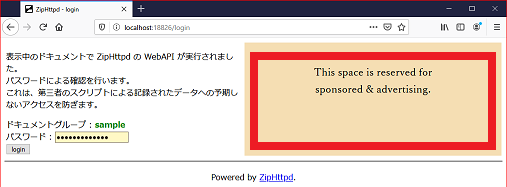

ZipHttpd
ZipHttpdドキュメント開発
ドキュメント開発ガイド
開発手順
１．prototype.zip を{{任意の名前}}でドキュメントディレクトリにコピーします。２．ZipHttpd を起動すると、static/prototype.com/prototype/{{任意の名前}}としてディレクトリが作成されます。
３．２で作成されたディレクトリ以下に html などコンテンツを作成します。
４．ブラウザから localhost - prototype.com - {{任意の名前}} にアクセスして動作を確認します。
５．ziphttpd/ に設定ファイル config.json を作成し、ディレクトリ以下を zip 圧縮すると、配布できるドキュメントが完成です。
ドキュメント署名
作成したドキュメントはhttpsで公開します。
設定ファイルの host 設定から SSL を使用して公開鍵と署名のファイルを取得します。
そして、署名が無いドキュメントがドキュメントグループにある場合は警告します。
SSL によりドキュメントの配布元の公開鍵と署名の正当性を担保するというコンセプトです。
DNS キャッシュポイズニングによるサイト偽装が脅威ですが、攻撃コスト的に見合わないだろうとの判断です。
ドキュメント配布元を狙うよりも銀行サイトなど優先度の高い攻撃目標がいくらでもあります。
以上の理由よりhost設定には、作成者が管理している WEB サーバを指定しておいてください。
署名ツールなどは、MIT ライセンスで提供予定です。
zhget では配布サイトで公開されている公開鍵で署名を確認してダウンロードします。
公開鍵の正当性を、SSL をもって担保とするコンセプトで、利用のためにドメインの取得は必須です。
ドメインの維持費以外は GCP 無料枠や Amazon S3 などを使うことでコストは月で数円程度に抑えられます。
WebAPI
機能
API-Ver.1 では、キーに対して値を記録する機能が実装されています。
WebAPI を呼びだすリファレンス実装として zhapi.js を用意してあります。
WebAPI を呼びだすサンプルとして apitest.js を用意してあります。
構想中の API-Ver.2 では、
・ 接続を保持して、プッシュ通知を行うウィンドウ間通信機能
・ ドキュメント内のファイルをリストで取得する機能
などを検討しています。
(採用予定なし) ネットワーククライアント機能
なお、ネットワーククライアント機能は ZipHttpd に実装する予定はありません。
ネットワーク接続が脆弱性の温床となる可能性を危惧しているためです。
ドキュメントの更新に関しては、別ツール zhget が担当します。
ログイン
WebAPI の利用にはセキュリティのためログインを必要とします。
悪意のあるドキュメントによるデータ窃盗や破壊の防止のためです。
ログイン画面への遷移はホストごとに zhapi.js により自動的に行われます。
ログインページ
ログインページは、ホストに割り当てられたポートの /login です。
ログインページではパスワードを入力します。
一度に一個のリクエストのみ、失敗時には5秒間のウェイトを持たせています。

パスワード
ここで入力するパスワードは基準フォルダの password.json ファイルにホスト別に設定しておきます。
{
"localstorage.com": {"password": "pass", "localstorage": true},
"xxxx.com": {"password": "pass"}
}
攻撃者がパスワードを参照できるためには、ファイルを自由に参照できている必要があります。
ファイルを自由に参照できるなら、パスワードを窃盗する必要がありません。
セッション管理
zhapi.js で実装されていますので、利用において気にする必要はありません。
この項は、セキュリティ保持のメカニズムをレビューする場合のガイドです。
概要
WebAPI の設計上の目標としてセンシティブな情報も保存できることを考慮しています。
そのためには、他のホストのドキュメントからの WebAPI 実行を防止する仕掛けを持ちます。
一般的な CSRF 対策とは少し事情が異なりますのでご注意ください。
基本的事項
ドキュメントの所属するホストごとに異なるポートを使用します。
別オリジンに属するページからの
WebAPI の実行は、無条件で失敗します。
CORSに従い、プリフライト（厳密には
POST 以外の全て）に対して単純にエラーを返しているからです。
zhapi.js を改造する際には、セッション管理が以下のコンセプトで動いている事に注意してください。
WebAPI は、
・ 同じオリジンから
・ X-Requested-With ヘッダに正しい CSRF トークンが設定されている
リクエストのみが実行可能です。
CSRF トークンは、ログインページでストレージAPIの token 値として取得します。
トークンは永続的ではなく ZipHttpd が再起動されるとリセットされます。
ログインページ遷移
zhapi.js を読み込むと、トークンが取得されていない場合には、ログインページに自動遷移します。
(function() {
const zh = new ZHAPI('auto');
zh.Noop().then(function(info) {}).catch(function(error) {});
})();
ログイン結果
ログインの試行の結果は、一旦ログインページに戻されます。
ページのデータとしてトークンが設定されていた場合、トークンを記録して元々の URL に自動的に遷移します。
document.addEventListener("DOMContentLoaded", function() {
let token = "{{.Token}}";
window['localStorage'].removeItem('token')
window['sessionStorage'].removeItem('token')
window['{{.Storage}}'].setItem('token', token);
if (token) {
location.href = "{{.RedirectTo}}";
} else {
document.all.item("ad").src = "{{.AdURL}}";
}
});
CSRF トークンの保存には Cookie ではなくセッションストレージを利用します。
Cookie はポート番号を区別しないため、別オリジンのドキュメントからでも参照できてしまうからです。
ストレージ API ならばポート番号が異なる別オリジンのドキュメントでは参照できません。
この保存場所は設定でローカルストレージを使用することもできますが、保持期間が永続的であることには留意してください。
杞憂ではありますが、何らかの方法でオリジンを誤魔化す脆弱性があった場合など、トークンが漏洩する危険性が増します。
そのため、上記の例でのxxxx.comホストのように無指定である場合には、セッションストレージを使用します。
copyright ZipHttpd.com 2020